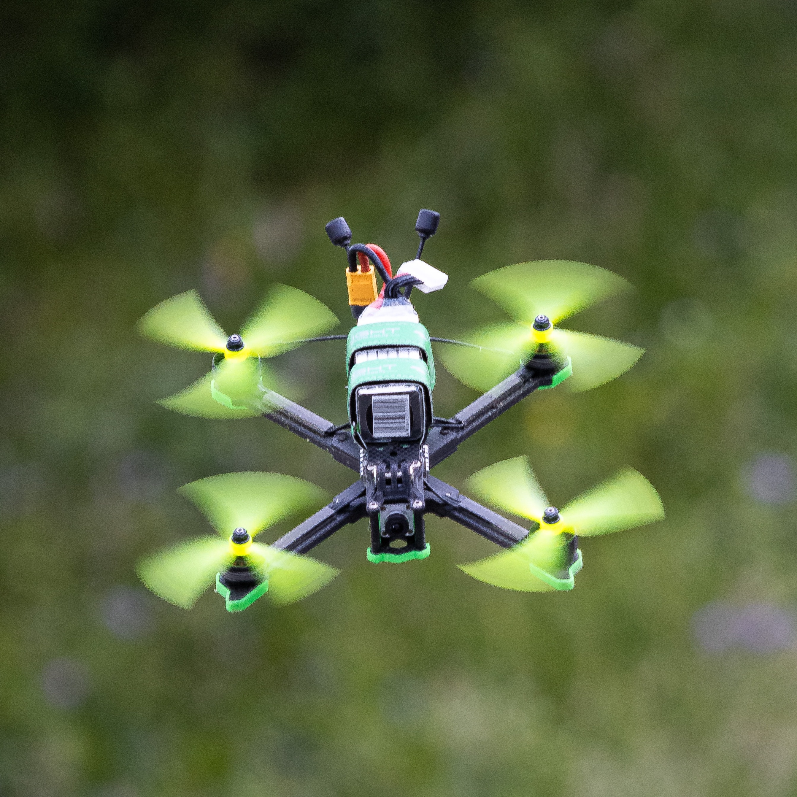

What are FPV Drones?
FPV stands for “First Person
View”.
You might have played with a Radio Control (RC) toy before, such as a toy car. Imagine that, instead
of looking at the vehicle from the outside, you could be virtually “sitting” inside the vehicle?
That’s FPV.
Maybe you’ve played a video game where you fly an aircraft through a virtual environment. What if,
instead of flying a virtual aircraft, you could be flying a real aircraft through a real environment? That’s FPV!
In technical terms, our FPV Drone can be categorized as multi-rotors. A multi-rotor is an aircraft
that flies not by air traveling over wings, but by propellers blowing air downwards. The most
commonmulti-rotor type is a quadcopter, which has four rotors (spinny things). There are also
bicopters (2 rotors), tricopters (3 rotors), hexacopters (6 rotors), octocopters (8 rotors), and so
on. Unless specified otherwise, you can assume we’re talking about a quadcopter - a drone with 4
motors.
What makes a drone so awesome is how versatile its range of movements is. By adjusting the thrust
between the motors, the drone can tilt itself and move through the air in any direction. It can
hover in place. It can move sideways. It can move up, and down, and forwards, and backwards.
This enormous amount of flexability that FPV drones offer has opened up a world of possibilities and
very unique angles not accomplished by other types of drones. Over the years, as RC technology has
gotten better, it has opened up even more possibilities. This has developed into 3 main styles of FPV.